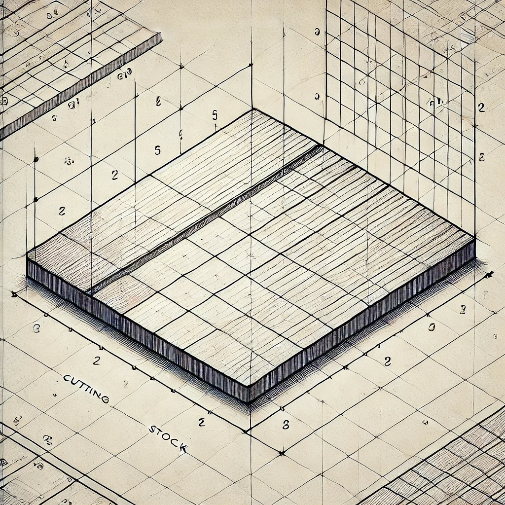

Exploring topics I find interesting.
Here, we demonstrate how Linear programming can be applied to solve Markov decision processes. Using a simple toy example, we guide the reader through the process step by step. No prior knowledge is required, as we provide a brief introduction to Linear programming concepts and clearly define the components of a Markov decision process.
Posted on: February 9th, 2025
Read More
In this post, we explore the Cutting Stock Problem (CSP) by presenting two different approaches: a direct integer programming formulation and a column generation method. We analyze the performance and discuss the advantages and limitations of each approach.
Posted on: February 9th, 2025
Read More